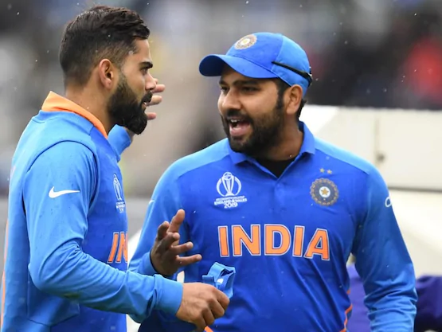
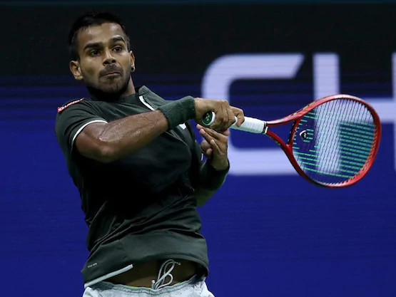

RBI Grade B exam is a national level competitive test conducted by Reserve Bank of India for recruitment of Officers in Grade ‘B’ (General) - DR, DEPR and DSIM in Common Seniority Group (CSG). RBI Grade B 2019 exam will be conducted in three Phases – Preliminary, Main exam and Interview Round. Download the official Brochure
Latest: RBI Grade B 2019 Application Form will be available from September 21 – October 11, 2019.
Goto top Government Web-Site Link
Latest Information Government Exam Information
About US Contact Us
Mail UsFollow On